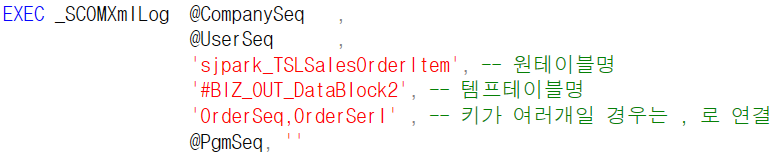
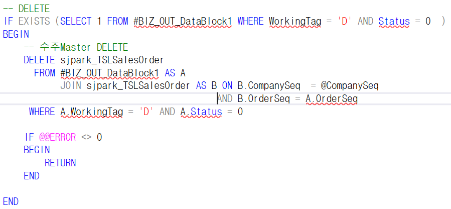
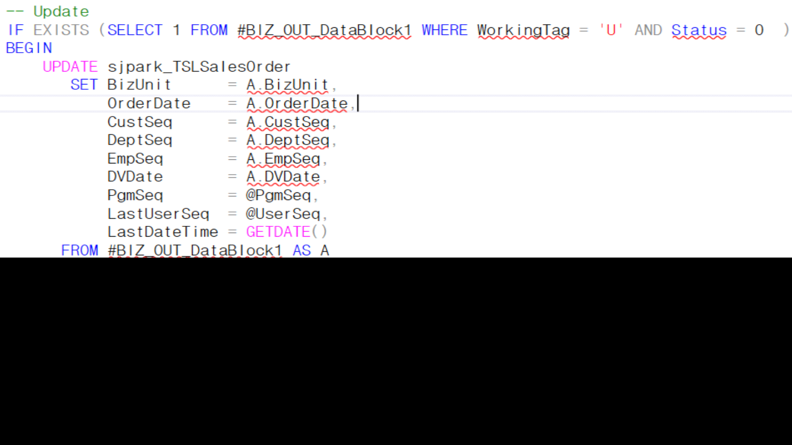
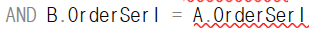

6. 저장 SP
*저장
체크에서 나온 값 사용
#BIZ_OUT_DataBlock1 => 마스터 영역

#BIZ_OUT_DataBlock2 => 아이템 영역
- 아이템 영역의 경우 키 값이 2개이므로
‘OrderSeq, OrderSerl’ 라고 작성
DELETE – UPDATE – INSERT 순서로 진행
================================================================================================
- DELETE

-
WorkingTag = ‘D’
-
Status = 0
- UPDATE

sjpark_TSLSalesOrder // #BIZ_OUT_DataBlock1
원테이블 // 임시테이블 비교
원테이블에 임시테이블 값 넣기

==> 아이템영역은 OrderSerl 조건 추가로 필요 (DELETE도 마찬가지)
- INSERT
Status가 0이 아니면 오류난 데이터라 저장을 안함
존재유무를 먼저 확인해줘야한다
Orderseq는 BIZ테이블1에서 방향 선언
int니까 0n
pgmseq 프로그램의 내부코드 속성값
lastuserseq – 최종 수정자 이름 (수정자의 내부코드 값이 들어감)
=> 화면에서 변수로 받아옴
update
company, orderseq 키 값 이기에 수정 x
bizunit은 업데이트가 없어도 수정
- 화면에 없는 값이므로 삭제